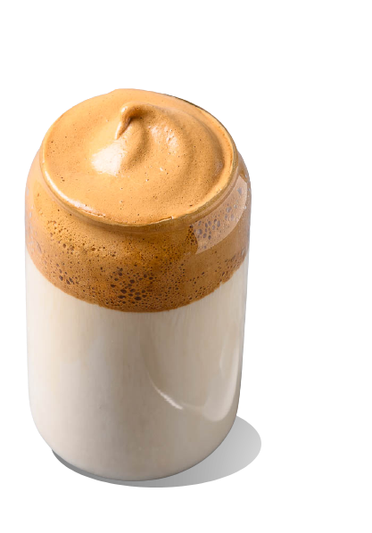

Dalgona coffee—it started as a Tik Tok trend and has now exploded all over the internet as the It-Drink of the moment. Not only is this drink hearty and creamy, it's also really easy and quick to make. Well, if you have an electric mixer, that is.
In a medium bowl, combine sugar, coffee, and water. Using a hand mixer or a whisk, vigorously whisk until mixture turns silky smooth and shiny, then continue whisking until it thickens and holds its lofty, foamy shape. (If whisking by hand, it will take 8 to 12 minutes to get to optimal fluffiness.)
Fill a glass most of the way full with ice and milk, then dollop and swirl the whipped coffee mixture on top, mixing before drinking, if desired.